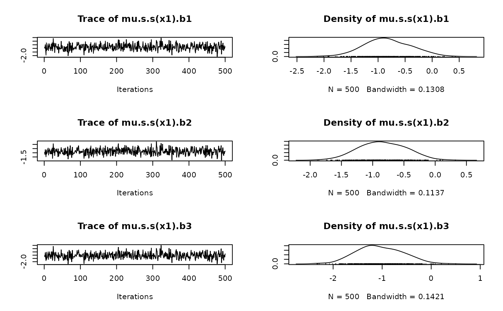
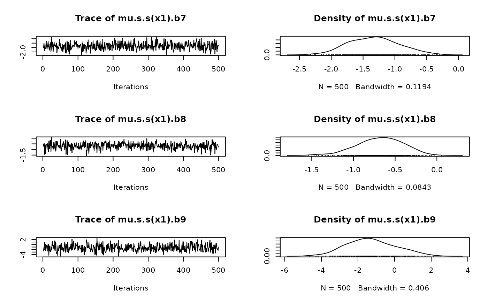
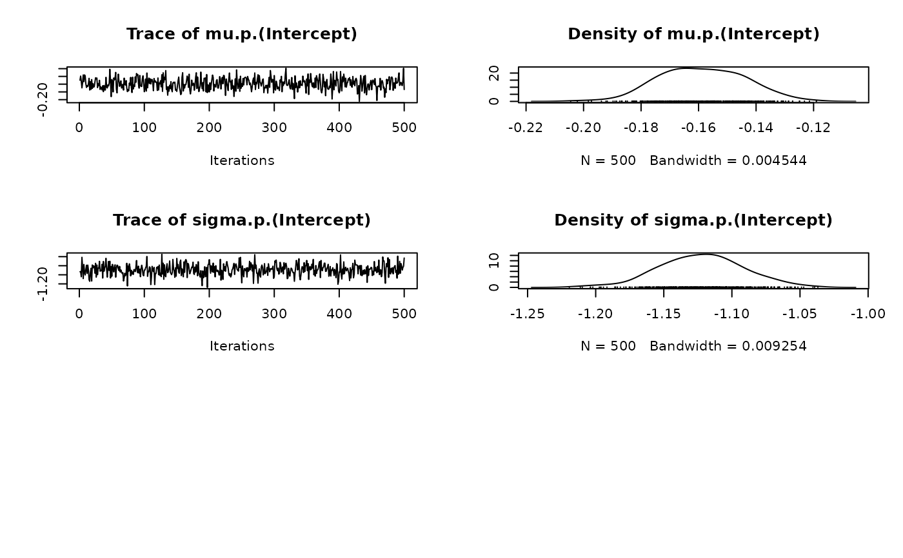

MVNORM.RdThis sampler function for BAMLSS uses estimated parameters and the Hessian
information to create samples from a multivariate normal distribution. Note that smoothing
variance uncertainty is not accounted for, therefore, the resulting credible intervals
are most likely too narrow.
sam_MVNORM(x, y = NULL, family = NULL, start = NULL,
n.samples = 500, hessian = NULL, ...)
MVNORM(x, y = NULL, family = NULL, start = NULL,
n.samples = 500, hessian = NULL, ...)The x list, as returned from
function bamlss.frame, holding all model matrices and other information that is
used for fitting the model. Or an object returned from function bamlss.
The model response, as returned from function bamlss.frame.
A bamlss family object, see family.bamlss.
A named numeric vector containing possible starting values, the names are based on
function parameters.
Sets the number of samples that should be generated.
The Hessian matrix that should be used. Note that the row and column names
must be the same as the names of the parameters. If hessian = NULL
the function uses optim to compute the Hessian if it is not provided
within x.
Arguments passed to function optim.
## Simulated data example illustrating
## how to call the sampler function.
## This is done internally within
## the setup of function bamlss().
d <- GAMart()
f <- num ~ s(x1, bs = "ps")
bf <- bamlss.frame(f, data = d, family = "gaussian")
## First, find starting values with optimizer.
o <- with(bf, opt_bfit(x, y, family))
#> AICc 258.2817 logPost -119.943 logLik -122.265 edf 6.7683 eps 1.1731 iteration 1
#> AICc 257.9515 logPost -119.641 logLik -121.862 edf 6.9996 eps 0.0160 iteration 2
#> AICc 257.9901 logPost -119.640 logLik -121.841 edf 7.0389 eps 0.0014 iteration 3
#> AICc 257.9911 logPost -119.640 logLik -121.840 edf 7.0400 eps 0.0000 iteration 4
#> AICc 257.9911 logPost -119.640 logLik -121.840 edf 7.0400 eps 0.0000 iteration 4
#> elapsed time: 0.05sec
## Sample.
samps <- with(bf, sam_MVNORM(x, y, family, start = o$parameters))
#>
plot(samps)


